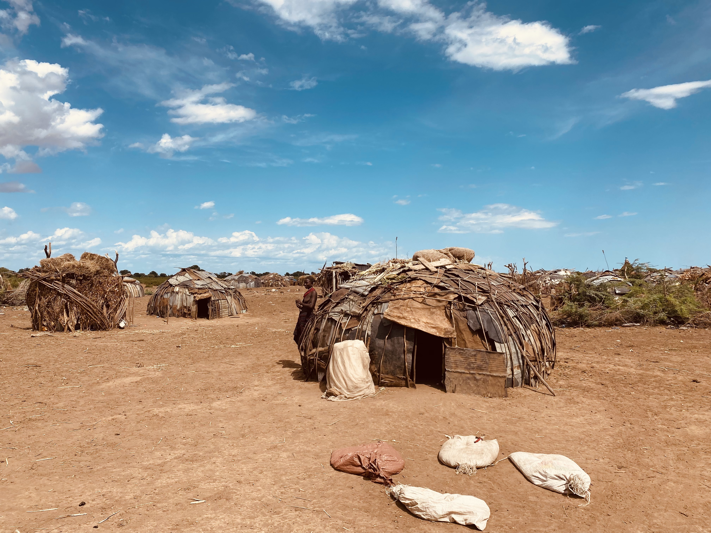

Etiopia
Od strony nieznanej
Położenie
Etiopia jest państwem położonym w Afryce Wschodniej, graniczącym z siedmioma innymi krajami.
Położenie geograficzne Etiopii sprawia, że kraj ten charakteryzuje się różnorodnością krajobrazów i ekosystemów.
W większości obszarów Etiopii panuje klimat suchy i gorący, jednak w górach i na wyższych wysokościach temperatury są niższe, a ilość opadów większa. Roczne pory deszczowe przynoszą opady monsunowe, które są istotne dla rolnictwa i hodowli.
Etiopia jest jednym z najwyżej położonych krajów na świecie, a średnia wysokość nad poziomem morza wynosi około 1 330 metrów.
Życie poza miastem
Życie poza miastem w Etiopii ma wiele unikalnych cech i odzwierciedla tradycyjny styl życia oraz więź z przyrodą. W obszarach wiejskich dominuje rolnictwo, a ludzie często pracują na polach uprawnych, hodują bydło i zajmują się rzemiosłem.
Wielu mieszkańców wsi w Etiopii korzysta z tradycyjnych metod uprawy roli, takich jak ręczne oranie, sadzenie i zbieranie plonów. Dostęp do nowoczesnych technologii często jest ograniczony, a zasoby wodne stanowią wyzwanie w niektórych regionach, co wpływa na produkcję żywności.
Etiopia oferuje niezwykle malownicze krajobrazy, które zapierają dech w piersiach.
Na Wyżynie Abisyńskiej można podziwiać rozległe pola i pagórki,
porośnięte zielonymi pastwiskami i kolorowymi uprawami.
Edukacja
System edukacyjny w Etiopii jest rozwijający się, choć wciąż staje przed wieloma wyzwaniami. Szkolnictwo jest obowiązkowe dla dzieci w wieku od 7 do 16 lat, a podstawowe szkoły podstawowe są dostępne na obszarach wiejskich. Jednak dostęp do edukacji wciąż jest ograniczony, zwłaszcza w odległych i biedniejszych regionach.
Brakuje wystarczającej liczby szkół, wykwalifikowanych nauczycieli i odpowiednich materiałów dydaktycznych. Infrastruktura szkolna w wielu miejscach pozostawia wiele do życzenia, a brak zasobów finansowych utrudnia rozwój systemu edukacyjnego.
Pomimo tych wyzwań, Etiopia podejmuje działania na rzecz poprawy dostępu do edukacji. Rząd stawia sobie za cel zwiększenie liczby szkół, szkolenie nauczycieli i ulepszenie programów nauczania.

Ciekawostki
Etiopia ma własny kalendarz, który jest około 7-8 lat za kalendarzem gregoriańskim. Obecnie w Etiopii jest rok 2015.
Etiopia jest jedynym krajem w Afryce, który nie został podbity przez kolonialistów. Odnosi się do siebie jako "kraj Wolnych Ludzi".
Język amharski jest oficjalnym językiem Etiopii i należy do grupy języków semickich. Jest również jednym z niewielu języków afrykańskich, które posiadają własne pismo.
W Etiopii znajduje się jezioro Tana, największe jezioro słodkowodne w kraju i jedno z najstarszych jezior na świecie. Jest również domem dla wielu gatunków endemicznych ryb.
Etiopia jest uważana za kolebkę kawy. Kawa jest nieodłączną częścią kultury etiopskiej i ceremonie picia kawy są ważnym elementem społecznym.
Etiopia jest jednym z najstarszych kontynuujących się państw na świecie, mającym bogatą i nieprzerwaną historię sięgającą tysięcy lat.

W Etiopii istnieje wiele zwierząt gospodarczych, które odgrywają istotną rolę w lokalnej gospodarce.
Zaliczają się do nich:
Kozy
Owce
Konie
Krowy
Kury
Co ciekawe wielbłądy są uważane za zwierzęta domowe w Etiopii ze względu na ich adaptacyjne cechy i przydatność w lokalnym środowisku.
Dostarczają transportu, żywności, mleka, skóry i pomagając w przetrwaniu w surowym środowisku. Dlatego zostały udomowione i są ważnym elementem kultury i gospodarki tego kraju.
W Etiopii występuje kilka niebezpiecznych dla człowieka zwierząt.
Zaliczyć do nich można hipopotamy, krokodyle, węże, skorpiony i muchy tse-tse.
Należy jednak dodać, że spotkania z niebezpiecznymi zwierzętami w Etiopii są stosunkowo rzadkie.
Hamerowie
Plemię Hamerów jest jednym z licznych plemion pastoralnych zamieszkujących południową Etiopię. Są znani z bogatej kultury i tradycji, które są przekazywane z pokolenia na pokolenie. Ich życie jest mocno zakorzenione w tradycyjnym pasterstwie i rolnictwie. Rozpoznawani są przez swoje charakterystyczne stroje i ozdoby. Kobiety noszą kolorowe skórzane spódnice, ozdobione perłami i metalowymi pierścieniami. Mężczyźni noszą skórzane stroje i charakterystyczne czapki z piór. Większość Hamerów praktykuje tradycyjne wierzenia i oddaje cześć swoim przodkom. Wierzą w istnienie duchów i przeprowadzają różne obrzędy religijne.
Plemię Hamerów jest niezwykle interesujące ze względu na swoją unikalną kulturę, tradycje i piękno.
Ich społeczność jest silnie związana z naturą i tradycyjnymi formami życia,
co czyni ich ważnym elementem dziedzictwa etnicznego Etiopii.
Hamerowie mieszkają w tradycyjnych wioskach rozsianych na obszarach południowej Etiopii, głównie w regionie Omo Valley. Ich domy są zbudowane z gałęzi, gliny i trawy. Są to niewielkie, okrągłe chaty o konstrukcji drewnianej, pokrytej matami lub skórami zwierząt.


Rzeka Omo ma ogromne znaczenie dla Hamerów, którzy zamieszkują region Doliny Omo w południowej Etiopii. Jest ona nieodłączną częścią życia społeczności, zapewniając im nie tylko zasoby naturalne, ale także łącząc ich kulturowo z ich dziedzictwem i historią. Jest niezwykle cennym zasobem dla ich przetrwania i trwałości.
Dysfunkcje
Etiopia jest zróżnicowana etnicznie, co prowadziło do konfliktów między różnymi grupami etnicznymi. W niektórych regionach występują napięcia i walki, które wpływają na stabilność kraju.
Etiopia jest jednym z najbiedniejszych krajów na świecie, z dużymi nierównościami społecznymi i ekonomicznymi. Duża część populacji żyje w biedzie, bez dostępu do podstawowych usług, edukacji i opieki zdrowotnej.
Wysoki wskaźnik bezrobocia i ubóstwa jest jednym z głównych problemów społeczno-gospodarczych w Etiopii. Brak odpowiednich miejsc pracy i dochodów prowadzi do trudności w zapewnieniu podstawowych potrzeb oraz ogranicza perspektywy rozwoju dla wielu ludzi.
Pomimo postępów w systemie edukacyjnym, wiele osób w Etiopii nadal boryka się z brakiem dostępu do edukacji. Niski poziom umiejętności czytania i pisania oraz brak dostatecznej liczby szkół i wykwalifikowanych nauczycieli stanowią wyzwanie dla rozwoju społecznego kraju.
Wielu mieszkańców Etiopii ma ograniczony dostęp do podstawowej opieki zdrowotnej. Braki w infrastrukturze medycznej, brak wyszkolonego personelu medycznego oraz trudności w dostępie do leków i środków sanitarnych powodują poważne problemy zdrowotne w kraju.
Aktualna godzina w Etiopii
© 2023 kacperwerakso